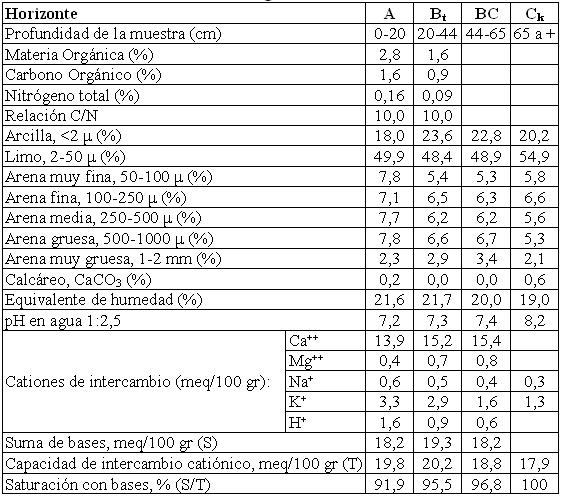

Argiustol típico, franca fina a franca gruesa, mixta, térmica
Capacidad de uso: IIIsc
Esta Serie se ha desarrollado sobre sedimentos de derrames distales en el piedemonte oriental de las sierras chicas de Córdoba, de textura franco limosa a franca, ubicada en sectores suavemente elevados, laterales de lóbulos de derrames y pequeñas pendientes sin escorrentías regionales actuales por razones topográficas. Es un suelo bien drenado, con horizontes subsuperficiales cortos y el material originario a 65 cm de profundidad. Tiene un horizonte superficial o capa arable de 20 cm de espesor, franco limoso a franco con 14% de arcilla y estructura en bloques subangulares. Continúa hacia abajo un horizonte Bt enriquecido en arcillas iluviales, franco limoso con estructura en prismas y bloques y barnices comunes en las caras de los agregados. Luego de una transición (horizonte BC), el material originario del suelo se encuentra a 65 cm de profundidad, es franco limoso a franco con 14% de arcilla, y material calcáreo pulverulento escaso a partir de los 80 cm.
Descripción del perfil típico:
El perfil representativo de este suelo fue descrito a 6,4 km al SSE de Villa del Totoral, departamento Totoral, provincia de Córdoba.
A 0-20 cm; color en húmedo pardo grisáceo muy oscuro (10YR3/2); franco limoso a franco; estructura en bloques subangulares medios moderados; friable en húmedo; no plástico; no adhesivo; pH 7,2; raíces abundantes; límite inferior claro suave.
Bt 20-44 cm; color en húmedo pardo amarillento oscuro (10YR3/4); franco limoso; estructura en bloques subangulares moderados y prismas; friable en húmedo; ligeramente plástico; ligeramente adhesivo; pH 7,3; barnices húmico arcillosos escasos a comunes; raíces escasas; límite inferior gradual, suave.
BC 44-65 cm; color en húmedo pardo amarillento oscuro (10YR4/4); franco limoso a franco; estructura en bloques y prismas débiles; friable en húmedo; no plástico; ligeramente adhesivo; pH 7,4; barnices arcillosos escasos y finos; límite inferior abrupto, ondulado.
Ck 65 cm a +; color en húmedo pardo (7,5YR5/4); franco limoso; masivo; friable en húmedo; no plástico; no adhesivo; pH 8,2.
Cuadro Nº13
Datos analíticos Serie EL CORTIJO
Situación: Latitud: 30º46’S Longitud: 63º58’O Altitud: 550 m.s.n.m.

|